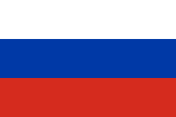
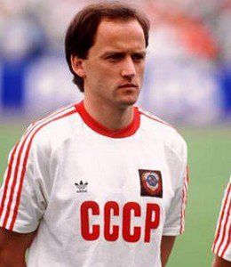
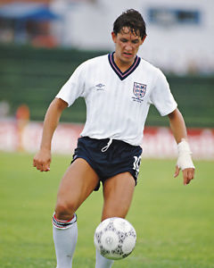

 Igor BELANOV - 1986
- Le furet Soviétique
En cette année 1986, Igor Belanov fut présent constamment sur tous les fronts. Il marqua de nombreux buts, gagna la Coupe des Coupes et est sacré champion d'URSS
Nationalité : Soviétique
Né le : 25 septembre 1960, à Odessa (UKR)
Taille : 1,74
Poids : 68 kg
Poste : attaquant
Clubs :SKA Odessa (1978-1980), Tchernomorets Odessa (1981-1984), Dynamo Kiev (1985-1989), Borussia Mönchengladbach (1989-1991), Eintracht Braunshweig (1991-1994) et Metalurg Mariupol (entrâineur-joueur, 1996-1997)
Palmarès de joueur : Coupe des Coupes 1986 ; Championnat d'URSS 1985 et 1986 ; Coupe d'URSS 1985 et 1987
Bilan en équipe nationale : 32 sélections A, 9 buts (1985-1990)
Bilan en phase finale de Coupe du monde : 1 participation, 4 matches, 4 buts (1986)
Palmarès Ballon d'Or : vainqueur en 1986
Classement du Ballon d’Or France Football 1986 :

Igor Belanov (URSS / Dynamo Kiev),
84 pts.

Garry Lineker (Angleterre / FC Barcelone),
62 pts.
Emilio Butragueño (Espagne / Real Madrid),
59 pts.
Retour à l'accueil